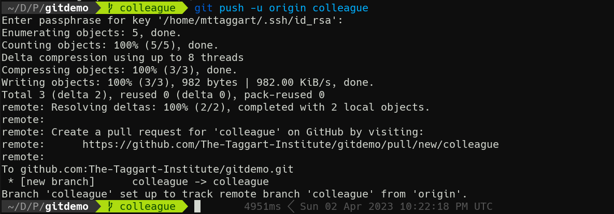
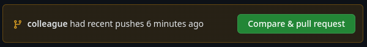
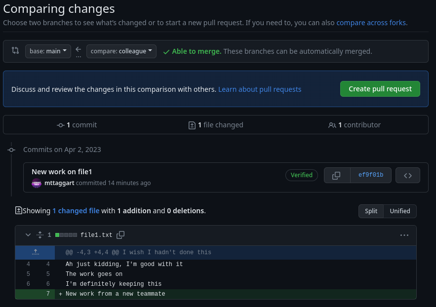
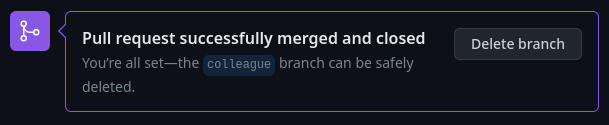
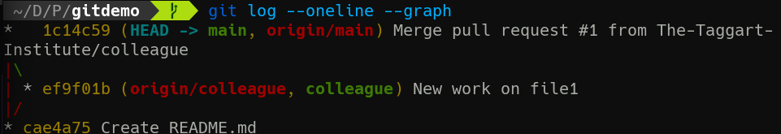
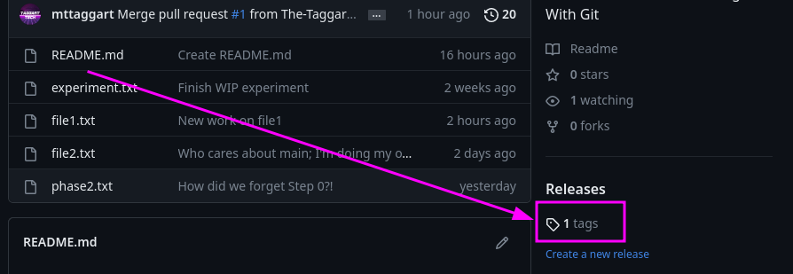
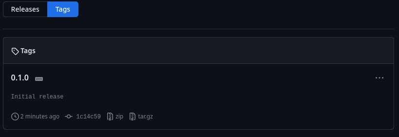
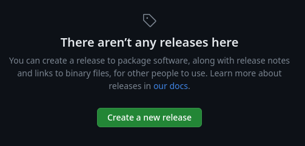

3-2: Pull Requests
Our project is up and running on GitHub, whoo! We're now able to collaborate with our team members across the world, keeping our locals updated with the latest changes in the authoritative source.
But imagine this situation: you and a colleague are both working on the same file. They push a change to main that is in direct contradiction to what you're doing. Then you go to pull. Suddenly, a merge conflict through no fault of your own!
Or even worse, you push your changes to main and suddenly now the official repo has a merge conflict. This is no way to manage changes.
Enter Pull Requests. These are a mechanism in GitHub and other repo hosting services to handle merges with review, discussion, and accountability. Here's the basic process:
- A contributor makes a push to a remote branch other than the merge target. The merge target can be
main, but doesn't have to be. - A pull request is opened, proposing a merge from the branch that just got pushed to the target branch.
- At this point, the repo hosting service will do a few things: perform a preflight on the merge to see if there are conflicts; open a discussion thread about the merge; and launch any automated tasks that have been configured by the team.
- After the merge has been approved, the merge is committed to the target branch. The reviewers then have the option to close the merged branch.
It makes more sense in practice. Let's request a pull!
Pull Request Example
Don't worry; you don't need to find a friend for this next part. You can play the role of multiple contributors for the purposes of this lesson.
Let's start back in gitdemo by creating a new branch for our "colleague."
git switch -c colleague
Time to make a new change!
echo "New work from a new teammate" >> file1.txt
git commit -am "New work on file1"
Now we need to push this to GitHub. Just like before, there is no colleague branch there yet, so we need to add it with the -u option for git push.
git push -u origin colleague

Oh hey look at that; GitHub is telling us right in the terminal that we can open a pull request. Good idea, GitHub! Follow that link or head to your repo on GitHub.
If you go soon after the push, you'll see a notification on the repo's main page about the push, with a handy link to make the PR. Do it!

Otherwise, head to "Pull Requests" and click the "New Pull Request" button.
When using the prompts, the new PR form is pre-filled out for you. Opening a PR manually means you need to set up the base and target branches. Our base in this case is main, compared with colleague.

GitHub should tell us that everything looks good and we can create the PR. Do so now.
PR Process
At this point, agreed-upon procedures for change management take over. Some can be automated, but others will be matters of policy. Discussion about big changes should take place in the thread opened for the PR, until all principals agree to the change.
In this case, it's a committee of one, so let's go ahead and merge.

Once done, you can delete the colleague branch on GitHub.
Now back in the terminal, let's switch to main and get our new changes.
git switch main
git pull
And now the new changes are in our main local branch! A review of git log --oneline --graph shows the PR represented in both the remote and local colleague branches.

That's it for the mechanics of PRs, but the practice can get a little more complicated. This next section is a bit of wisdom I've picked up along the way about how to do PRs well.
PR Best Practices
Branch Strategies
Generally speaking, branches are either long-term or short-term. Long-term branches can be for specific versions, development efforts, or even for the ongoing work of specific teams. PRs can be opened from invididual devs to the team branch, or to those specific version branches.
Short-term branches are useful for specific features or bugfixes. PRs can be opened from them to the appropriate long-term branches.
PR Approvals
In my experience, it's best if one or a very small group of people have final say on PR approvals per branch. You want to strike a balance between discussion, accountability, and a timely decision process. The bigger the change, the more important discussion around the change impacts will be.
Automated Processes
Although outside the scope of this course, I encourage you to explore automated processes that would be appropriate for your project. That could mean automated builds or testing such that your tools are doing all possible checks to make sure the changes won't break anything. Then, automated deployment can get your changes published as quickly as possible. This is known as Continuous Integration/Continuous Development, or CI/CD.
Git Tags and Releases
One last Git trick before we get out of here: Git has a built-in tool for version management: tags!
Tags are metadata we can add to commits to indicate versioning. These tags are reviewable in GitHub and can be attached to Releases, to indicate significant updates available for users.
Versioning
There are many version numbering strategies, but I tend to subscribe to SemVer, or Semantic Versioning. The details can be negotiable, but big picture we have 3 parts to the version number, like 1.2.3.
Making a Tag and Release
Let's tag a version and release it!
We start on main and create a tag. This is a pre-release version, so we'll do 0.1.0.
git tag -a 0.1.0 -m "Initial release"
This adds (-a) with a message (-m) of "Initial release."
Now, to send this tag to GitHub, there is a specific push syntax:
git push origin 0.1.0
And just like that, we have a new tag available! You can see this in the bottom right of the repo main page, or at /tags.

yy
To make a release, click on the "Releases" tab, and "Create a new release."

On the next form, you can choose an existing tag or make a new one. Good thing we know how to make tags now! You can then add details about the release, as well as upload any files you want users to be able to download (like compiled binaries).
Once done, we have ourselves a release!
I tend to only add tags and create releases from main to keep things clean. Other branches eventually feed into that branch for new versions, but other projects can take advantage of other structures.
And that's it for PRs! Moving into the final Unit, we'll discuss publishing documentation using GitHub and Honkit—kinda what we've been building to this whole time!